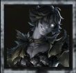
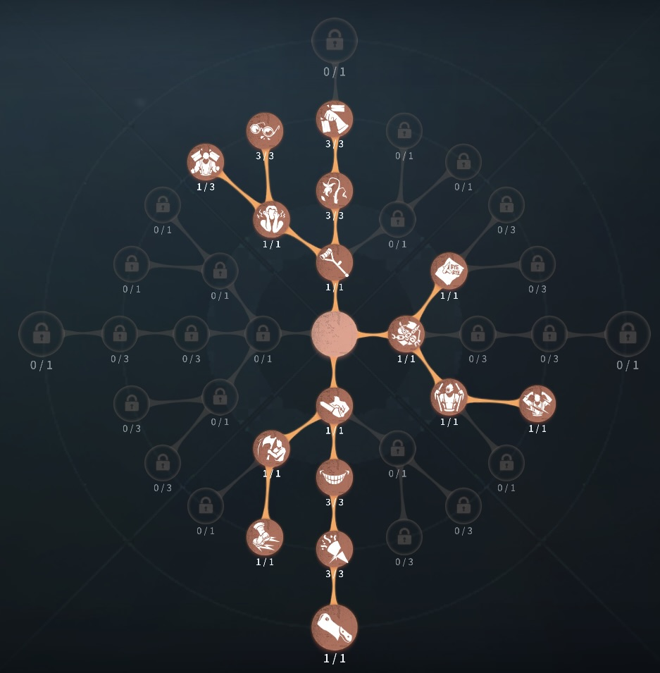
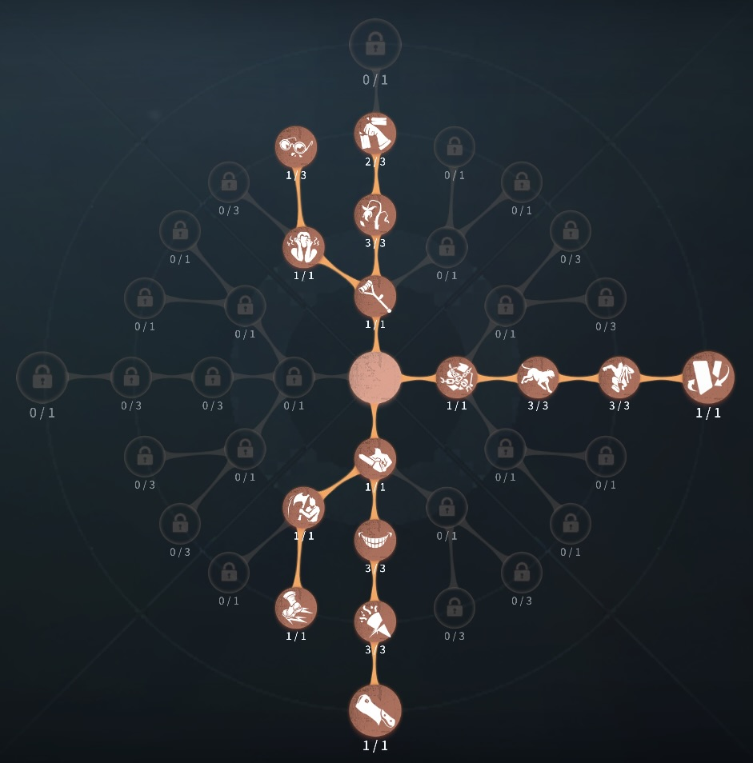

フールズ・ゴールド（ノートン）の評価
崩壊で救助狩り
外在特質とスキル
特質1:不安定エリア
・つるはしを投げて障害物にぶつけると命中した場所に15m以内の淵に2不安定エリアを生成する。不安定エリアのつるはしを回収することで崩壊が1回起こる。・崩壊:
・不安定エリア内にいる全てのサバイバーに0.5ダメージを与える。
存在感0：磁力伝導、牽引
・磁力伝導:・つるはしを前方に投げることができる。つるはしが障害物に命中しなかった場合、回収後のクールタイムが2秒減少する。
・磁力延長:
投げられたつるはしは最大10秒間滞在する。その間はフールズ・ゴールドの一部の操作が制限される。制限時間を超過する、もしくはフールズ・ゴールドとつるはしの距離が60メートルを超えると、つるはしは自動的に回収される。
・磁力回収:
投げた状態のつるはしを戻す。
・牽引:
・つるはしの設置したポジションまでダッシュすることができ、ダッシュ後つるはしは自動的に回収される。
存在感1：磁力変換、共振
・磁力変換:・最大60ｍの任意の位置に引力の石を設置できる。20秒間存在する石の範囲内に不安定エリアを生成する。
・共振:
・生成された不安定エリアが連動して崩壊を起こす。引力の石とフールズ・ゴールドの距離が遠いほど、引力の石の共振が発動する時間に遅延が発生する。
存在感2：一触即発
・つるはしを構えた状態で1.5秒間以上力をため続けることで、投げたつるはしが障害物に命中すると崩壊を発生させる。ハンターの立ち回り方
1. 初動の立ち回り
「牽引」スキルを活用した初動移動
・デススポーンの場合:
✅ 「牽引」を利用して素早くスポーン位置のサバイバーへ接近する。
スポーン選択システム発動時：追いたいサバイバーの方向へ向かい、できるだけ早く接敵する。
接敵後の初動チェイス
・接敵後の初動チェイス:
✅サバイバーの逃げ先を予測し、板や窓枠に「つるはし」を投げて0.5ダメージを狙う。
板は割らずに囲い込むように立ち回り、ポジションに閉じ込める動きを意識する。
強ポジに入られる前に「不安定エリア」を発生させて圧をかけ、回り込んで通常攻撃を当てる。なるべく早いダウンを目指すため、攻撃が確実に当たるタイミングで「つるはし」を投げる。
2. スキルの使い方
フールズ・ゴールドのスキルはつるはしの理解度で試合が決まる
・つるはし:
・板・窓枠に投げてサバイバーの移動を制限する。
0.5ダメージを与えた後、通常攻撃で確実に1ダメージを入れる動きを意識する。
・牽引:
・初動の移動、タゲチェン、ゲート前での圧力として使用。
逃げるサバイバーの動線を制限するためにも活用する。
・崩壊の石:
・救助狩りや暗号機圧に利用。暗号機に設置し、遠隔で「崩壊」を発生させて解読妨害。救助狩りの際は椅子前に設置し、不安定エリアを発生させてダメージを与える。
3. チェイス中の立ち回り
フールズ・ゴールドのチェイスは、つるはしの0.5ダメージと通常攻撃をどう繋ぐかで決まる。
・板・窓の先につるはしを投げる:
サバイバーが板を倒す位置や窓の着地点を予測してつるはしを投げ、不安定エリアの崩壊で0.5ダメージを狙う。0.5が入った後は通常攻撃1発でダウンまで持っていけるため、無理に深追いせず確実に当たる距離を維持しよう。
・牽引で板グルをショートカット:
板グルされたら、ポジションの反対側につるはしを投げて牽引で一気に距離を詰めることで、回し合いを強引に終わらせられる。逃げ込まれたくない強ポジの入り口に先回りする使い方も強力。ただし牽引後はつるはしが回収されるため、次の崩壊までの時間を意識しよう。
・つるはしの外しに注意:
つるはしの構えはサバイバーに見えており、投擲中は動きも制限される。外すとその分チェイスが伸びるため、読み合いに自信がない場面では「一触即発」の溜め投げで崩壊を直接当てるなど、確実性の高い選択を優先しよう。
4. 救助狩りの立ち回り
フールズ・ゴールドは崩壊エリアの回収と通常のタイミングが重要です。
・崩壊エリアを利用して救助狩り:
・椅子前に「崩壊の石」を設置し、救助者に2回ダメージを狙う。
「つるはし」を椅子の近くに刺して不安定エリアを作り、30秒間救助しづらい環境を整える。
・救助に来ない場合の対応:
・耳鳴りがしない or
4割救助の気配がない場合は、遠隔で暗号機に「崩壊の石」を設置して解読圧をかける。石を設置した暗号機を回し続けるサバイバーには、近くの障害物を利用して崩壊ダメージを狙う。
・地下救助狩り:
・地下室の階段に不安定エリアを展開し、救助者を制限。
障害物周りで複数のサバイバーを巻き込んでダウンを狙う。
5. 注意点
フールズ・ゴールドを使う際には、以下の点に注意しましょう。
🔹 つるはしの回収タイミング
→
つるはしや石の設置動作は全サバイバーに強調表示されるため、フェイントを織り交ぜて警戒させる。
🔹 通電後のゲート
→
ゲート内では不安定エリアが発生しないため、通電後はゲート前で圧をかける。
🔹 タゲチェンの判断が重要
→
「牽引」を活用し、余裕で追えるサバイバーへターゲットを変更することで有利に立ち回る。
おすすめの内在人格
引き留めるのみ型人格
この内在人格は、板割りを早くし、狂暴で椅子前を強化し、衝動でため攻撃を加速した人格

裏向きカード型人格
この内在人格は、板割りを早くし、衝動でため攻撃を早くした人格


みんなのコメント